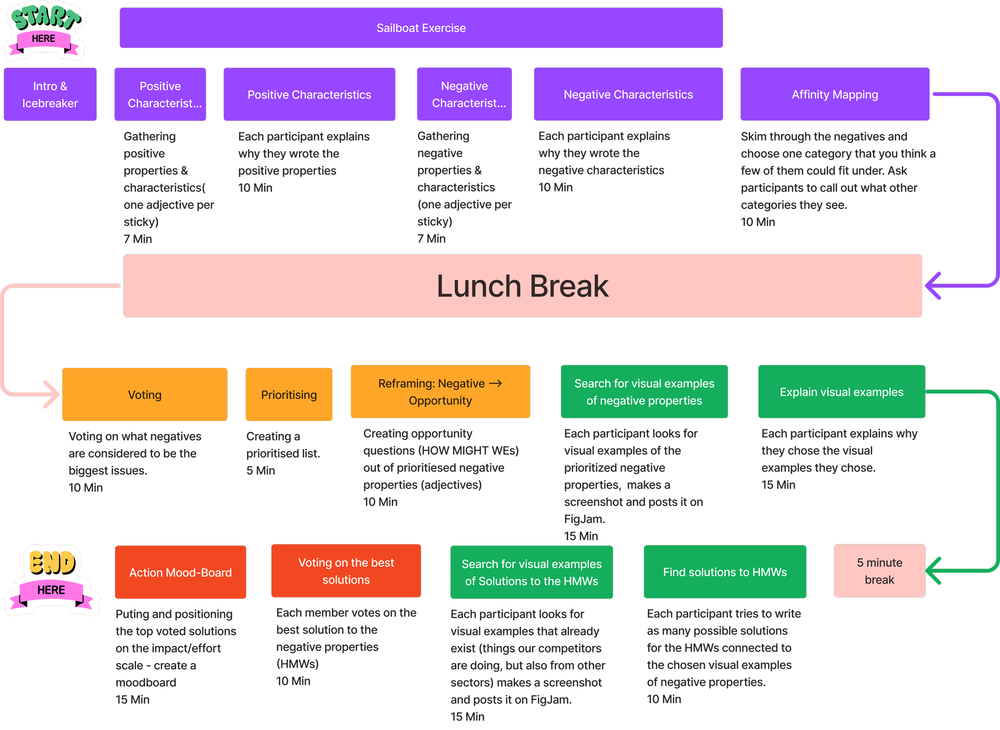

This 3-hour workshop utilized the Lightning Decision Jam framework, which is built around the double-diamond method to achieve a structured process that leads to more ideas, clearer decisions and better outcomes.
Verimi is a German digital identity platform that provides secure online authentication, identity verification, and payment services for businesses and individuals across various industries.
On this occasion the entire Design and Marketing Team got together in an onsite workshop to find alignement and generate ideas for future steps and making necessary changes in the company's visual identity and visual communication, with the focus on visual aspect and not on the product itself.
The goal of this workshop was to challenge Company’s Status Quo from the perspective of the visual identity and visual communication, both external and internal, and see what could and/or should be changed as well as how these changes can be achieved.
The intended legacy of this workshop was to align on processes and strategies to achieve that goal. This entails gaining clarity on where we are now, identifying what could be done better, and finding actionable solutions on how to achieve that.
Marketing Team:
Product Design Team:
This 3-hour workshop utilized the Lightning Decision Jam framework, which is built around the double-diamond method to achieve a structured process that leads to more ideas, clearer decisions and better outcomes.
Following is the diagram of the agenda and how the parts of the workshop were timelined:

During the Collect phase the “Sailboat Exercise” from the LDJ was performed to gather all the positive and then all the negative characteristics of
the Verimi’s visual identity and visual communication.
The sticky notes with the positive characteristics were placed above the "water surface"
next to the sail, the negative ones below next to the anchor.
After that, an “Affinity Mapping” exercise was performed to group all the negative
characteristics into relating groups.
With all the stickies gathered into relative groups, voting was performed on what negatives are considered to be the biggest issues, and according to votes given a prioritized list of issues was created. Out of prioritized negative properties opportunity questions (HOW MIGHT WEs) were created in a group discussion:
In the "creation phase", we collaborated on the virtual Figjam board. Our work began by collecting visual examples of the negative attributes identified in the "HOW MIGHT WEs". We then gathered possible solutions to the weaknesses identified by collecting examples that demonstrated how the problems could be solved.
In the final stage, all the participants voted for what they found to be the best the solutions to the HMW’s, and positioned the top voted solutions on the Effort/impact matrix, for each respective HMW.
No clear action items were assigned at the end of the workshop, because the purpose of it was not to assign tasks, but to align Marketing and design teams, and gather some qualitative insight on what is our own internal perception of the company's visual communication of as well as its vision. This is important because it was our aim to actively challenge and improve the “status quo” of the company's brand
identity.
The problems as well as the opportunities that we identified
during the workshop would serve as a guide in that commitment. It was a
good opportunity to see how each individual and also
two different teams perceive this issue. Also it was a great chance to
align on certain subjects, question each others perspectives as well as
question conscious and unconscious assumptions that we might have
as an individual or as team.
This session was just the first part of a
series of creative workshops to follow in the future. An event like this is
a good opportunity to assemble the two "creative" teams to work and
brainstorm together in person. Subsequent workshops would look at
some more specific topics and try to find more actionable items that
can be done by specific people.